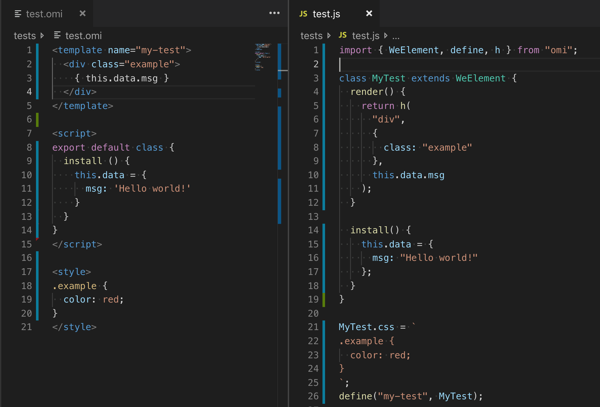

Omi Snippets
在配置完 Omil 之后，我们可以在 VSC 上同时安装好 Omi Snippets 扩展，这个插件可以方便的让你把 .omi 和 .eno 后缀文件转化为 .js 文件，让你可以直观了解到单文件组件经过 omil 转化后的 JS 文件内容。
目录结构
例如你在 webpack 的入口文件夹中有一个 .omi 的后缀文件，当你新建并经过编辑保存之后，Omi Snippets扩展会在同级目录下新建一份同名但不同后缀的 .js 文件
- src
- Hello.omi
- Hello.js
| Hello.omi | 开发中你需要编写的单文件组件 |
|---|---|
| Hello.js | 修改或者保存文件Hello.omi后经过插件转化的js文件 |
如下图，左边的代码是我们编写的 .omi 后缀的单文件组件，右边是经过 Omi Snippets 生成的 .js 后缀文件。
示例代码
上图的示例代码如下
<template>标签负责放 JSX 的内容，属性name="my-test"为该组件的名字，后面可以在 JSX 中用<my-text>使用该组件;<script>标签负责放入组件的逻辑文件，固定的结构为export default class { // 你的代码 }或者为export default HOC(class { // 你的代码 })两种形式，第一种是定义类组件，第二种用来定义高阶组件，你的代码部分可以放入生命周期，函数等;<style>标签负责定义该组件的局部样式
1 | <template name="my-test"> |
以下代码就是经过 Omi Snippets 生成的 .js 后缀文件，可以用于在你没有 omil 模块下，主逻辑文件或者其他组件引入调用。
1 | import { WeElement, define, h } from "omi"; |